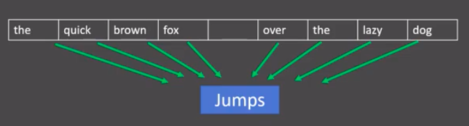
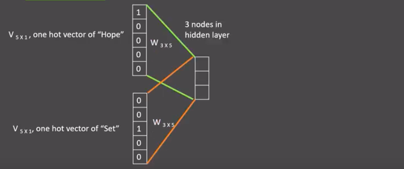
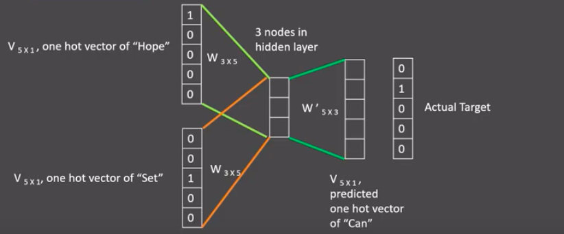
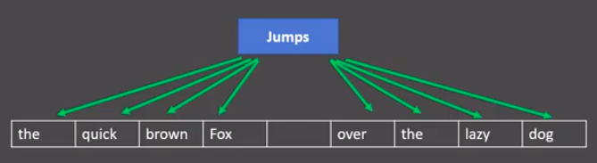
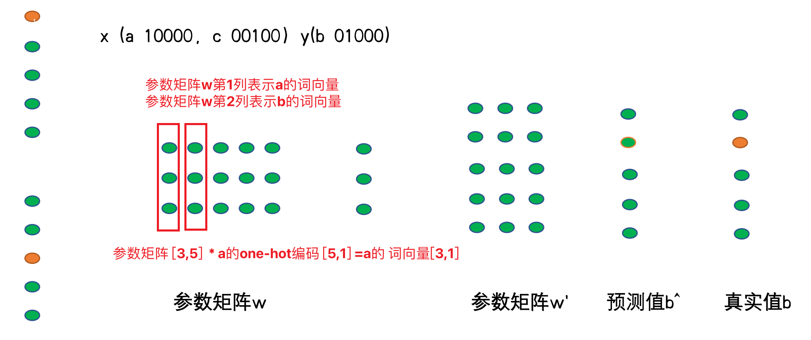
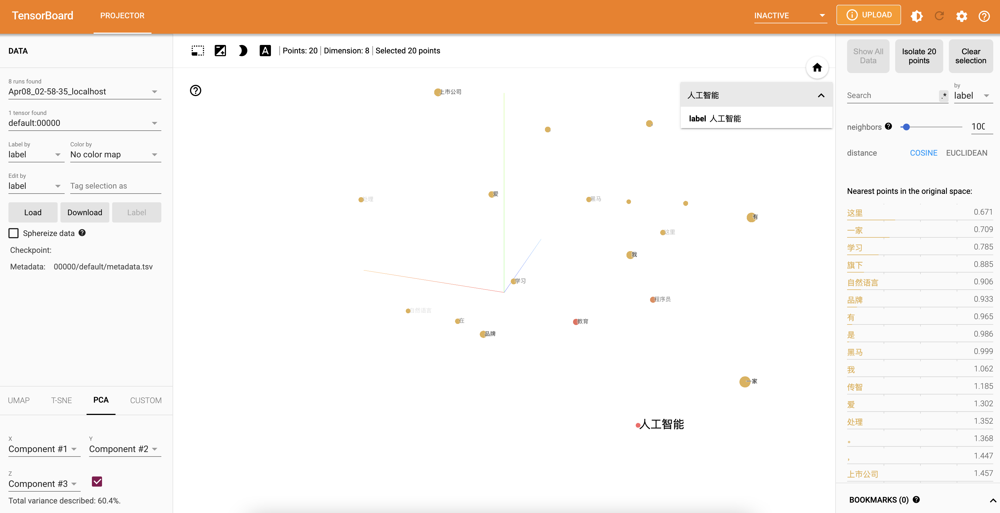

3 文本张量表示方法
学习目标¶
- 了解什么是文本张量表示及其作用.
- 掌握文本张量表示的几种方法及其实现.
1 文本张量表示¶
-
将一段文本使用张量进行表示，其中一般将词汇表示成向量，称作词向量，再由各个词向量按顺序组成矩阵形成文本表示.
-
举个例子:
["人生", "该", "如何", "起头"]
==>
# 每个词对应矩阵中的一个向量
[[1.32, 4,32, 0,32, 5.2],
[3.1, 5.43, 0.34, 3.2],
[3.21, 5.32, 2, 4.32],
[2.54, 7.32, 5.12, 9.54]]
-
文本张量表示的作用:
- 将文本表示成张量（矩阵）形式，能够使语言文本可以作为计算机处理程序的输入，进行接下来一系列的解析工作.
-
文本张量表示的方法:
- one-hot编码
- Word2vec
- Word Embedding
2 one-hot词向量表示¶
-
又称独热编码，将每个词表示成具有n个元素的向量，这个词向量中只有一个元素是1，其他元素都是0，不同词汇元素为0的位置不同，其中n的大小是整个语料中不同词汇的总数.
-
举个例子:
["改变", "要", "如何", "起手"]`
==>
[[1, 0, 0, 0],
[0, 1, 0, 0],
[0, 0, 1, 0],
[0, 0, 0, 1]]
- onehot编码实现:
- 进行onehot编码:
import jieba
# 导入keras中的词汇映射器Tokenizer
from tensorflow.keras.preprocessing.text import Tokenizer
# 导入用于对象保存与加载的joblib
from sklearn.externals import joblib
# 思路分析 生成onehot
# 1 准备语料 vocabs
# 2 实例化词汇映射器Tokenizer, 使用映射器拟合现有文本数据 (内部生成 index_word word_index)
# 2-1 注意idx序号-1
# 3 查询单词idx 赋值 zero_list，生成onehot
# 4 使用joblib工具保存映射器 joblib.dump()
def dm_onehot_gen():
# 1 准备语料 vocabs
vocabs = {"周杰伦", "陈奕迅", "王力宏", "李宗盛", "吴亦凡", "鹿晗"}
# 2 实例化词汇映射器Tokenizer, 使用映射器拟合现有文本数据 (内部生成 index_word word_index)
# 2-1 注意idx序号-1
mytokenizer = Tokenizer()
mytokenizer.fit_on_texts(vocabs)
# 3 查询单词idx 赋值 zero_list，生成onehot
for vocab in vocabs:
zero_list = [0] * len(vocabs)
idx = mytokenizer.word_index[vocab] - 1
zero_list[idx] = 1
print(vocab, '的onehot编码是', zero_list)
# 4 使用joblib工具保存映射器 joblib.dump()
mypath = './mytokenizer'
joblib.dump(mytokenizer, mypath)
print('保存mytokenizer End')
# 注意5-1 字典没有顺序 onehot编码没有顺序 []-有序 {}-无序 区别
# 注意5-2 字典有的单词才有idx idx从1开始
# 注意5-3 查询没有注册的词会有异常 eg: 狗蛋
print(mytokenizer.word_index)
print(mytokenizer.index_word)
- 输出效果:
陈奕迅 的onehot编码是 [1, 0, 0, 0, 0, 0]
王力宏 的onehot编码是 [0, 1, 0, 0, 0, 0]
鹿晗 的onehot编码是 [0, 0, 1, 0, 0, 0]
周杰伦 的onehot编码是 [0, 0, 0, 1, 0, 0]
李宗盛 的onehot编码是 [0, 0, 0, 0, 1, 0]
吴亦凡 的onehot编码是 [0, 0, 0, 0, 0, 1]
保存mytokenizer End
{'陈奕迅': 1, '王力宏': 2, '鹿晗': 3, '周杰伦': 4, '李宗盛': 5, '吴亦凡': 6}
{1: '陈奕迅', 2: '王力宏', 3: '鹿晗', 4: '周杰伦', 5: '李宗盛', 6: '吴亦凡'}
- onehot编码器的使用:
# 思路分析
# 1 加载已保存的词汇映射器Tokenizer joblib.load(mypath)
# 2 查询单词idx 赋值zero_list，生成onehot 以token为'李宗盛'
# 3 token = "狗蛋" 会出现异常
def dm_onehot_use():
vocabs = {"周杰伦", "陈奕迅", "王力宏", "李宗盛", "吴亦凡", "鹿晗"}
# 1 加载已保存的词汇映射器Tokenizer joblib.load(mypath)
mypath = './mytokenizer'
mytokenizer = joblib.load(mypath)
# 2 编码token为"李宗盛" 查询单词idx 赋值 zero_list，生成onehot
token = "李宗盛"
zero_list = [0] * len(vocabs)
idx = mytokenizer.word_index[token] - 1
zero_list[idx] = 1
print(token, '的onehot编码是', zero_list)
- 输出效果:
李宗盛 的onehot编码是 [0, 0, 0, 0, 1, 0]
-
one-hot编码的优劣势：
- 优势：操作简单，容易理解.
-
劣势：完全割裂了词与词之间的联系，而且在大语料集下，每个向量的长度过大，占据大量内存.
-
正因为one-hot编码明显的劣势，这种编码方式被应用的地方越来越少，取而代之的是接下来我们要学习的稠密向量的表示方法word2vec和word embedding.
3 word2vec模型¶
3.1 模型介绍¶
-
word2vec是一种流行的将词汇表示成向量的无监督训练方法, 该过程将构建神经网络模型, 将网络参数作为词汇的向量表示, 它包含CBOW和skipgram两种训练模式.
-
CBOW(Continuous bag of words)模式:
- 给定一段用于训练的文本语料, 再选定某段长度(窗口)作为研究对象, 使用上下文词汇预测目标词汇.

- 分析:
- 图中窗口大小为9, 使用前后4个词汇对目标词汇进行预测.
- CBOW模式下的word2vec过程说明:
- 假设我们给定的训练语料只有一句话: Hope can set you free (愿你自由成长)，窗口大小为3，因此模型的第一个训练样本来自Hope can set，因为是CBOW模式，所以将使用Hope和set作为输入，can作为输出，在模型训练时， Hope，can，set等词汇都使用它们的one-hot编码. 如图所示: 每个one-hot编码的单词与各自的变换矩阵(即参数矩阵3x5, 这里的3是指最后得到的词向量维度)相乘之后再相加, 得到上下文表示矩阵(3x1).

- 接着, 将上下文表示矩阵与变换矩阵(参数矩阵5x3, 所有的变换矩阵共享参数)相乘, 得到5x1的结果矩阵, 它将与我们真正的目标矩阵即can的one-hot编码矩阵(5x1)进行损失的计算, 然后更新网络参数完成一次模型迭代.

- 最后窗口按序向后移动，重新更新参数，直到所有语料被遍历完成，得到最终的变换矩阵(3x5)，这个变换矩阵与每个词汇的one-hot编码(5x1)相乘，得到的3x1的矩阵就是该词汇的word2vec张量表示.
- skipgram模式:
- 给定一段用于训练的文本语料, 再选定某段长度(窗口)作为研究对象, 使用目标词汇预测上下文词汇.

- 分析:
- 图中窗口大小为9, 使用目标词汇对前后四个词汇进行预测.
- skipgram模式下的word2vec过程说明:
假设我们给定的训练语料只有一句话: Hope can set you free (愿你自由成长)，窗口大小为3，因此模型的第一个训练样本来自Hope can set，因为是skipgram模式，所以将使用can作为输入 ，Hope和set作为输出，在模型训练时， Hope，can，set等词汇都使用它们的one-hot编码. 如图所示: 将can的one-hot编码与变换矩阵(即参数矩阵3x5, 这里的3是指最后得到的词向量维度)相乘, 得到目标词汇表示矩阵(3x1).
接着, 将目标词汇表示矩阵与多个变换矩阵(参数矩阵5x3)相乘, 得到多个5x1的结果矩阵, 它将与我们Hope和set对应的one-hot编码矩阵(5x1)进行损失的计算, 然后更新网络参数完成一次模 型迭代.

- 最后窗口按序向后移动，重新更新参数，直到所有语料被遍历完成，得到最终的变换矩阵即参数矩阵(3x5)，这个变换矩阵与每个词汇的one-hot编码(5x1)相乘，得到的3x1的矩阵就是该词汇的word2vec张量表示.
- 词向量的检索获取
- 神经网络训练完毕后，神经网络的参数矩阵w就我们的想要词向量。如何检索某1个单词的向量呢？以CBOW方式举例说明如何检索a单词的词向量。
- 如下图所示：a的onehot编码[10000]，用参数矩阵[3,5] * a的onehot编码[10000]，可以把参数矩阵的第1列参数给取出来，这个[3,1]的值就是a的词向量。

3.2 word2vec的训练和使用¶
- 第一步: 获取训练数据
- 第二步: 训练词向量
- 第三步: 模型超参数设定
- 第四步: 模型效果检验
- 第五步: 模型的保存与重加载
1 获取训练数据¶
数据来源：http://mattmahoney.net/dc/enwik9.zip
在这里, 我们将研究英语维基百科的部分网页信息, 它的大小在300M左右。这些语料已经被准备好, 我们可以通过Matt Mahoney的网站下载。
注意：原始数据集已经放在/root/data/enwik9.zip，解压后数据为/root/data/enwik9，预处理后的数据为/root/data/fil9
- 查看原始数据:
$ head -10 data/enwik9
# 原始数据将输出很多包含XML/HTML格式的内容, 这些内容并不是我们需要的
<mediawiki xmlns="http://www.mediawiki.org/xml/export-0.3/" xmlns:xsi="http://www.w3.org/2001/XMLSchema-instance" xsi:schemaLocation="http://www.mediawiki.org/xml/export-0.3/ http://www.mediawiki.org/xml/export-0.3.xsd" version="0.3" xml:lang="en">
<siteinfo>
<sitename>Wikipedia</sitename>
<base>http://en.wikipedia.org/wiki/Main_Page</base>
<generator>MediaWiki 1.6alpha</generator>
<case>first-letter</case>
<namespaces>
<namespace key="-2">Media</namespace>
<namespace key="-1">Special</namespace>
<namespace key="0" />
- 原始数据处理:
# 使用wikifil.pl文件处理脚本来清除XML/HTML格式的内容
# perl wikifil.pl data/enwik9 > data/fil9 #该命令已经执行
- 查看预处理后的数据:
# 查看前80个字符
head -c 80 data/fil9
# 输出结果为由空格分割的单词
anarchism originated as a term of abuse first used against early working class
2 词向量的训练保存加载¶
fasttext 是 facebook 开源的一个词向量与文本分类工具。下面是该工具包的安装方法
# 训练词向量工具库的安装
# 方法1 简洁版
pip install fasttext
# 方法2：源码安装(推荐)
# 以linux安装为例： 目录切换到虚拟开发环境目录下，再执行git clone 操作
git clone https://github.com/facebookresearch/fastText.git
cd fastText
# 使用pip安装python中的fasttext工具包
sudo pip install .
# 导入fasttext
import fasttext
def dm_fasttext_train_save_load():
# 1 使用train_unsupervised(无监督训练方法) 训练词向量
mymodel = fasttext.train_unsupervised('./data/fil9')
print('训练词向量 ok')
# 2 save_model()保存已经训练好词向量
# 注意，该行代码执行耗时很长
mymodel.save_model("./data/fil9.bin")
print('保存词向量 ok')
# 3 模型加载
mymodel = fasttext.load_model('./data/fil9.bin')
print('加载词向量 ok')
# 步骤1运行效果如下：
有效训练词汇量为124M, 共218316个单词
Read 124M words
Number of words: 218316
Number of labels: 0
Progress: 100.0% words/sec/thread: 53996 lr: 0.000000 loss: 0.734999 ETA: 0h 0m
3 查看单词对应的词向量¶
# 通过get_word_vector方法来获得指定词汇的词向量, 默认词向量训练出来是1个单词100特征
def dm_fasttext_get_word_vector():
mymodel = fasttext.load_model('./data/fil9.bin')
myvector = mymodel.get_word_vector('the')
print('myvector->', type(myvector), myvector.shape, myvector)
# 运行效果如下：
array([-0.03087516, 0.09221972, 0.17660329, 0.17308897, 0.12863874,
0.13912526, -0.09851588, 0.00739991, 0.37038437, -0.00845221,
...
-0.21184735, -0.05048715, -0.34571868, 0.23765688, 0.23726143],
dtype=float32)
4 模型效果检验¶
# 检查单词向量质量的一种简单方法就是查看其邻近单词, 通过我们主观来判断这些邻近单词是否与目标单词相关来粗略评定模型效果好坏.
# 查找"运动"的邻近单词, 我们可以发现"体育网", "运动汽车", "运动服"等.
>>> model.get_nearest_neighbors('sports')
[(0.8414610624313354, 'sportsnet'), (0.8134572505950928, 'sport'), (0.8100415468215942, 'sportscars'), (0.8021156787872314, 'sportsground'), (0.7889881134033203, 'sportswomen'), (0.7863013744354248, 'sportsplex'), (0.7786710262298584, 'sporty'), (0.7696356177330017, 'sportscar'), (0.7619683146476746, 'sportswear'), (0.7600985765457153, 'sportin')]
# 查找"音乐"的邻近单词, 我们可以发现与音乐有关的词汇.
>>> model.get_nearest_neighbors('music')
[(0.8908010125160217, 'emusic'), (0.8464668393135071, 'musicmoz'), (0.8444250822067261, 'musics'), (0.8113634586334229, 'allmusic'), (0.8106718063354492, 'musices'), (0.8049437999725342, 'musicam'), (0.8004694581031799, 'musicom'), (0.7952923774719238, 'muchmusic'), (0.7852965593338013, 'musicweb'), (0.7767147421836853, 'musico')]
# 查找"小狗"的邻近单词, 我们可以发现与小狗有关的词汇.
>>> model.get_nearest_neighbors('dog')
[(0.8456876873970032, 'catdog'), (0.7480780482292175, 'dogcow'), (0.7289096117019653, 'sleddog'), (0.7269964218139648, 'hotdog'), (0.7114801406860352, 'sheepdog'), (0.6947550773620605, 'dogo'), (0.6897546648979187, 'bodog'), (0.6621081829071045, 'maddog'), (0.6605004072189331, 'dogs'), (0.6398137211799622, 'dogpile')]
5 模型超参数设定¶
# 在训练词向量过程中, 我们可以设定很多常用超参数来调节我们的模型效果, 如:
# 无监督训练模式: 'skipgram' 或者 'cbow', 默认为'skipgram', 在实践中，skipgram模式在利用子词方面比cbow更好.
# 词嵌入维度dim: 默认为100, 但随着语料库的增大, 词嵌入的维度往往也要更大.
# 数据循环次数epoch: 默认为5, 但当你的数据集足够大, 可能不需要那么多次.
# 学习率lr: 默认为0.05, 根据经验, 建议选择[0.01，1]范围内.
# 使用的线程数thread: 默认为12个线程, 一般建议和你的cpu核数相同.
>>> model = fasttext.train_unsupervised('data/fil9', "cbow", dim=300, epoch=1, lr=0.1, thread=8)
Read 124M words
Number of words: 218316
Number of labels: 0
Progress: 100.0% words/sec/thread: 49523 lr: 0.000000 avg.loss: 1.777205 ETA: 0h 0m 0s
4 词嵌入word embedding介绍¶
- 通过一定的方式将词汇映射到指定维度(一般是更高维度)的空间.
- 广义的word embedding包括所有密集词汇向量的表示方法，如之前学习的word2vec, 即可认为是word embedding的一种.
-
狭义的word embedding是指在神经网络中加入的embedding层, 对整个网络进行训练的同时产生的embedding矩阵(embedding层的参数), 这个embedding矩阵就是训练过程中所有输入词汇的向量表示组成的矩阵.
-
word embedding的可视化分析:
- 通过使用tensorboard可视化嵌入的词向量.
import torch
from tensorflow.keras.preprocessing.text import Tokenizer
from torch.utils.tensorboard import SummaryWriter
import jieba
import torch.nn as nn
# 注意：
# fs = tf.io.gfile.get_filesystem(save_path)
# AttributeError: module 'tensorflow._api.v2.io.gfile' has no attribute 'get_filesystem'
# 错误原因分析：
# 1 from tensorboard.compat import tf 使用了tf 如果安装tensorflow，默认会调用它tf的api函数
import tensorflow as tf
import tensorboard as tb
tf.io.gfile = tb.compat.tensorflow_stub.io.gfile
# 实验：nn.Embedding层词向量可视化分析
# 1 对句子分词 word_list
# 2 对句子word2id求my_token_list，对句子文本数值化sentence2id
# 3 创建nn.Embedding层，查看每个token的词向量数据
# 4 创建SummaryWriter对象, 可视化词向量
# 词向量矩阵embd.weight.data 和 词向量单词列表my_token_list添加到SummaryWriter对象中
# summarywriter.add_embedding(embd.weight.data, my_token_list)
# 5 通过tensorboard观察词向量相似性
# 6 也可通过程序，从nn.Embedding层中根据idx拿词向量
def dm02_nnembeding_show():
# 1 对句子分词 word_list
sentence1 = '传智教育是一家上市公司，旗下有黑马程序员品牌。我是在黑马这里学习人工智能'
sentence2 = "我爱自然语言处理"
sentences = [sentence1, sentence2]
word_list = []
for s in sentences:
word_list.append(jieba.lcut(s))
# print('word_list--->', word_list)
# 2 对句子word2id求my_token_list，对句子文本数值化sentence2id
mytokenizer = Tokenizer()
mytokenizer.fit_on_texts(word_list)
# print(mytokenizer.index_word, mytokenizer.word_index)
# 打印my_token_list
my_token_list = mytokenizer.index_word.values()
print('my_token_list-->', my_token_list)
# 打印文本数值化以后的句子
sentence2id = mytokenizer.texts_to_sequences(word_list)
print('sentence2id--->', sentence2id, len(sentence2id))
# 3 创建nn.Embedding层
embd = nn.Embedding(num_embeddings=len(my_token_list), embedding_dim=8)
# print("embd--->", embd)
# print('nn.Embedding层词向量矩阵-->', embd.weight.data, embd.weight.data.shape, type(embd.weight.data))
# 4 创建SummaryWriter对象 词向量矩阵embd.weight.data 和 词向量单词列表my_token_list
summarywriter = SummaryWriter()
summarywriter.add_embedding(embd.weight.data, my_token_list)
summarywriter.close()
# 5 通过tensorboard观察词向量相似性
# cd 程序的当前目录下执行下面的命令
# 启动tensorboard服务 tensorboard --logdir=runs --host 0.0.0.0
# 通过浏览器，查看词向量可视化效果 http://127.0.0.1:6006
print('从nn.Embedding层中根据idx拿词向量')
# # 6 从nn.Embedding层中根据idx拿词向量
for idx in range(len(mytokenizer.index_word)):
tmpvec = embd(torch.tensor(idx))
print('%4s'%(mytokenizer.index_word[idx+1]), tmpvec.detach().numpy())
- 程序运行效果
my_token_list--> dict_values(['是', '黑马', '我', '传智', '教育', '一家', '上市公司', '，', '旗下', '有', '程序员', '品牌', '。', '在', '这里', '学习', '人工智能', '爱', '自然语言', '处理'])
sentence2id---> [[4, 5, 1, 6, 7, 8, 9, 10, 2, 11, 12, 13, 3, 1, 14, 2, 15, 16, 17], [3, 18, 19, 20]] 2
从nn.Embedding层中根据idx拿词向量
是 [ 0.46067393 -0.9049023 -0.03143226 -0.32443136 0.03115687 -1.3352231
-0.08336695 -2.4732168 ]
黑马 [ 0.66760564 0.08703537 0.23735243 1.5896837 -1.8869231 0.22520915
-1.0676078 -0.7654686 ]
我 [-0.9093167 -0.6114051 -0.6825029 0.9269122 0.5208822 2.294128
-0.11160549 -0.34862307]
传智 [-1.1552105 -0.4274638 -0.8121502 -1.4969801 -1.3328248 -1.0934378
0.6707438 -1.1796173]
教育 [ 0.01580311 -1.1884228 0.59364647 1.5387698 -1.0822943 0.36760855
-0.4652998 -0.57378227]
一家 [-1.1898873 -0.42482868 -1.9391155 -1.5678993 -1.6960118 0.22525501
-1.0754168 0.41797593]
上市公司 [ 0.590556 2.4274144 1.6698223 -0.9776848 -0.6119061 0.4434897
-2.3726876 -0.2607738]
， [-0.17568143 1.0074369 0.2571488 1.8940887 -0.5383494 0.65416646
0.63454026 0.6235991 ]
旗下 [ 2.8400452 -1.0096515 2.247107 0.30006626 -1.2687006 0.05855403
0.01199368 -0.6156502 ]
有 [ 0.89320636 -0.43819678 1.0345292 1.3546743 -1.4238662 -1.6994532
0.30445674 2.673923 ]
程序员 [ 1.2147354 0.24878891 0.36161897 0.37458655 -0.48264053 -0.0141514
1.2033817 0.7899459 ]
品牌 [ 0.59799325 -0.01371854 0.0628166 -1.4829391 0.39795023 -0.39259398
-0.60923046 0.54170054]
。 [ 0.59599686 1.6038656 -0.10832139 0.25223547 0.37193906 1.1944667
-0.91253406 0.6869221 ]
在 [-1.161504 2.6963246 -0.6087775 0.9399654 0.8480068 0.684357
0.96156543 -0.3541162 ]
这里 [ 0.1034054 -0.01949253 0.8989019 1.61057 -1.5983531 0.17945968
-0.17572908 -0.9724814 ]
学习 [-1.3899843 -1.0846052 -1.1301199 -0.4078141 0.40511298 0.6562911
0.9231357 -0.34704337]
人工智能 [-1.4966388 -1.0905199 1.001238 -0.75254333 -1.4210068 -1.854177
1.0471514 -0.27140012]
爱 [-1.5254552 0.6189947 1.2703396 -0.4826037 -1.4928672 0.8320283
1.7333516 0.16908517]
自然语言 [-0.3856235 -1.2193452 0.9991112 -1.5821775 0.45017946 -0.66064674
0.08045111 0.62901515]
处理 [ 1.5062869 1.3156213 -0.21295634 0.47610474 0.08946162 0.57107806
-1.0727187 0.16396333]
词向量和词显示标签 写入磁盘ok 在当前目录下查看 ./runs 目录
- 在终端启动tensorboard服务:
$ cd ~
$ tensorboard --logdir=runs --host 0.0.0.0
# 通过http://192.168.88.161:6006访问浏览器可视化页面
- 浏览器展示并可以使用右侧近邻词汇功能检验效果:

5 小结¶
-
学习了什么是文本张量表示:
- 将一段文本使用张量进行表示，其中一般将词汇为表示成向量，称作词向量，再由各个词向量按顺序组成矩阵形成文本表示.
-
学习了文本张量表示的作用:
- 将文本表示成张量（矩阵）形式，能够使语言文本可以作为计算机处理程序的输入，进行接下来一系列的解析工作.
-
学习了文本张量表示的方法:
- one-hot编码
- Word2vec
- Word Embedding
-
什么是one-hot词向量表示:
- 又称独热编码，将每个词表示成具有n个元素的向量，这个词向量中只有一个元素是1，其他元素都是0，不同词汇元素为0的位置不同，其中n的大小是整个语料中不同词汇的总数.
-
学习了onehot编码实现.
-
学习了one-hot编码的优劣势：
- 优势：操作简单，容易理解.
- 劣势：完全割裂了词与词之间的联系，而且在大语料集下，每个向量的长度过大，占据大量内存.
-
学习了什么是word2vec:
- 是一种流行的将词汇表示成向量的无监督训练方法, 该过程将构建神经网络模型, 将网络参数作为词汇的向量表示, 它包含CBOW和skipgram两种训练模式.
-
学习了CBOW(Continuous bag of words)模式:
- 给定一段用于训练的文本语料, 再选定某段长度(窗口)作为研究对象, 使用上下文词汇预测目标词汇.
-
学习了CBOW模式下的word2vec过程说明:
-
假设我们给定的训练语料只有一句话: Hope can set you free (愿你自由成长)，窗口大小为3，因此模型的第一个训练样本来自Hope you set，因为是CBOW模式，所以将使用Hope和set作为输入，you作为输出，在模型训练时， Hope，set，you等词汇都使用它们的one-hot编码. 如图所示: 每个one-hot编码的单词与各自的变换矩阵(即参数矩阵3x5, 这里的3是指最后得到的词向量维度)相乘之后再相加, 得到上下文表示矩阵(3x1).
-
接着, 将上下文表示矩阵与变换矩阵(参数矩阵5x3, 所有的变换矩阵共享参数)相乘, 得到5x1的结果矩阵, 它将与我们真正的目标矩阵即you的one-hot编码矩阵(5x1)进行损失的计算, 然后更新网络参数完成一次模型迭代.
-
最后窗口按序向后移动，重新更新参数，直到所有语料被遍历完成，得到最终的变换矩阵(3x5)，这个变换矩阵与每个词汇的one-hot编码(5x1)相乘，得到的3x1的矩阵就是该词汇的word2vec张量表示.
-
-
学习了skipgram模式:
- 给定一段用于训练的文本语料, 再选定某段长度(窗口)作为研究对象, 使用目标词汇预测上下文词汇.
-
学习了skipgram模式下的word2vec过程说明:
-
假设我们给定的训练语料只有一句话: Hope can set you free (愿你自由成长)，窗口大小为3，因此模型的第一个训练样本来自Hope you set，因为是skipgram模式，所以将使用you作为输入 ，hope和set作为输出，在模型训练时， Hope，set，you等词汇都使用它们的one-hot编码. 如图所示: 将you的one-hot编码与变换矩阵(即参数矩阵3x5, 这里的3是指最后得到的词向量维度)相乘, 得到目标词汇表示矩阵(3x1).
-
接着, 将目标词汇表示矩阵与多个变换矩阵(参数矩阵5x3)相乘, 得到多个5x1的结果矩阵, 它将与我们hope和set对应的one-hot编码矩阵(5x1)进行损失的计算, 然后更新网络参数完成一次模 型迭代.
-
最后窗口按序向后移动，重新更新参数，直到所有语料被遍历完成，得到最终的变换矩阵即参数矩阵(3x5)，这个变换矩阵与每个词汇的one-hot编码(5x1)相乘，得到的3x1的矩阵就是该词汇的word2vec张量表示.
-
-
学习了使用fasttext工具实现word2vec的训练和使用:
- 第一步: 获取训练数据
- 第二步: 训练词向量
- 第三步: 模型超参数设定
- 第四步: 模型效果检验
- 第五步: 模型的保存与重加载
-
学习了什么是word embedding(词嵌入):
- 通过一定的方式将词汇映射到指定维度(一般是更高维度)的空间.
- 广义的word embedding包括所有密集词汇向量的表示方法，如之前学习的word2vec, 即可认为是word embedding的一种.
- 狭义的word embedding是指在神经网络中加入的embedding层, 对整个网络进行训练的同时产生的embedding矩阵(embedding层的参数), 这个embedding矩阵就是训练过程中所有输入词汇的向量表示组成的矩阵.
-
学习了word embedding的可视化分析:
- 通过使用tensorboard可视化嵌入的词向量.
- 在终端启动tensorboard服务.
- 浏览器展示并可以使用右侧近邻词汇功能检验效果.